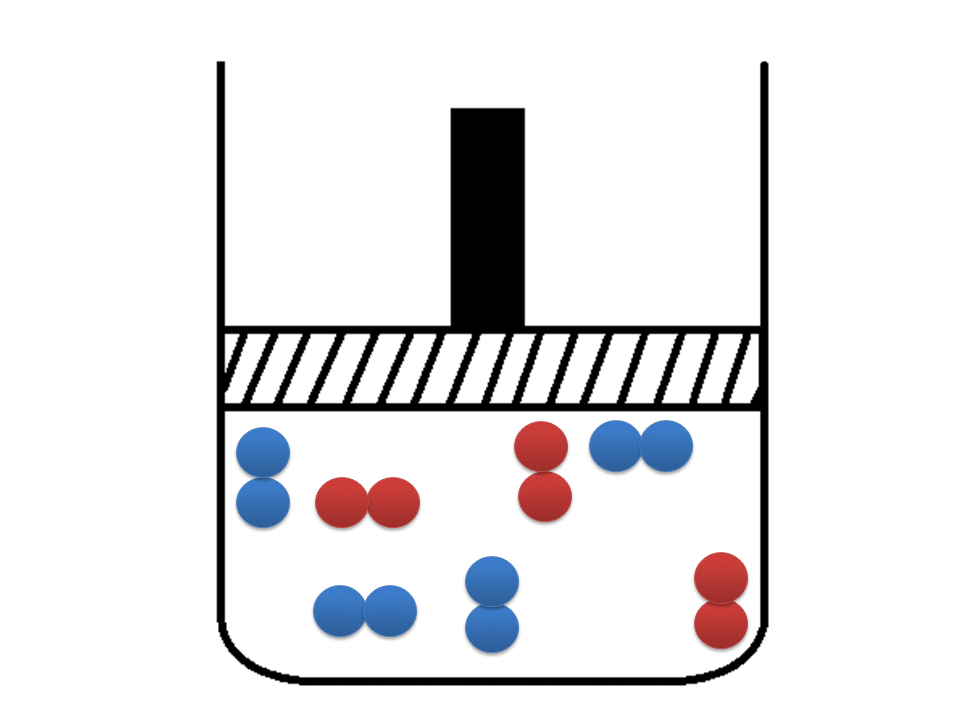
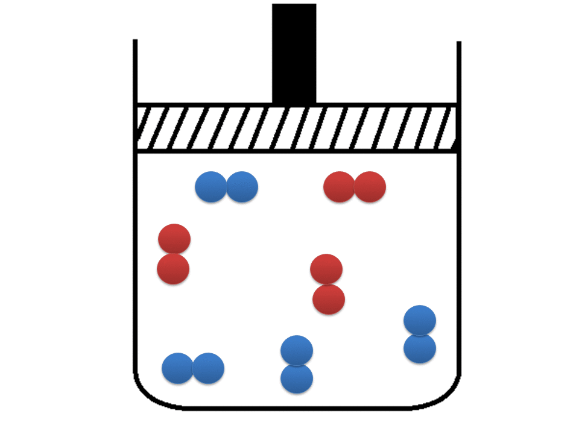

O efeito da pressão só é considerável quando todas as moléculas da reação encontram-se no estado gasoso. Ao aumentar a pressão,
diminui o volume e com isso há uma maior ocorrência de colisões. No qual, aumenta a velocidade da reação.
O efeito da pressão em relação ao volume ocorre de forma inversamente proporcional. Ao diminuir a pressão, o volume
aumenta e vice-versa. Com a pressão diminuida, irá haver poucas colisões efetivas fazendo com que a reação aconteça mais lentamente.
 CINÉTICA
CINÉTICA